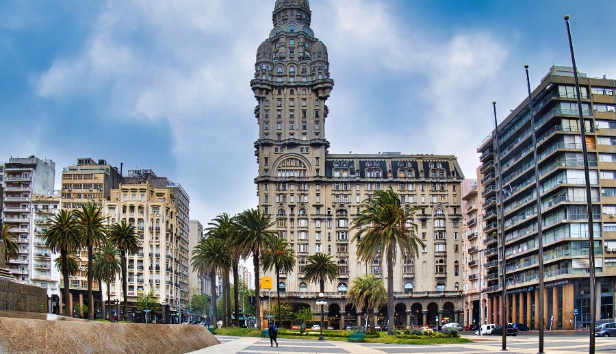
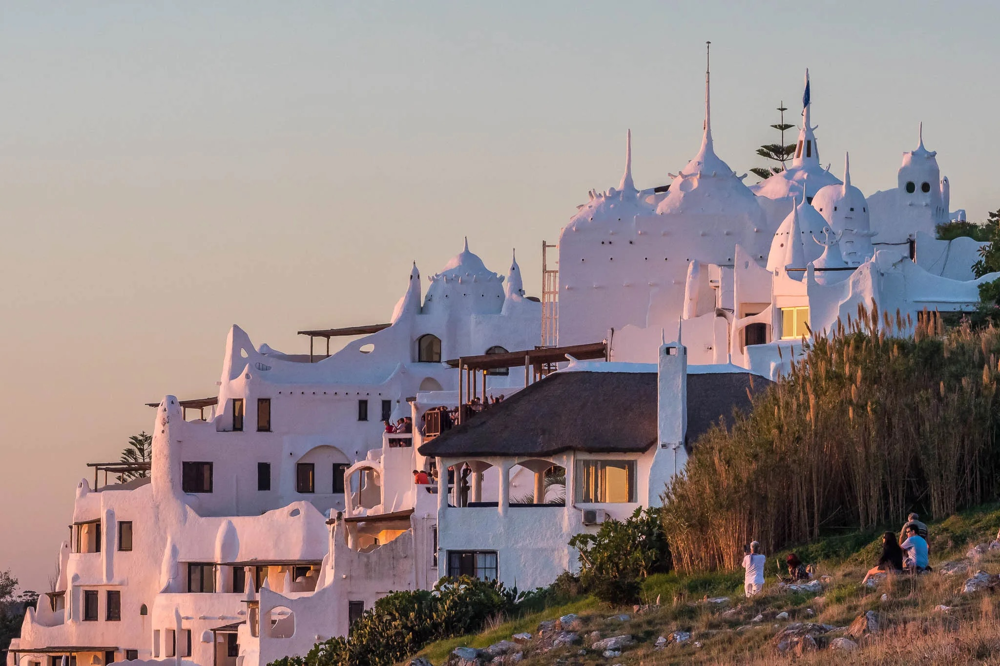
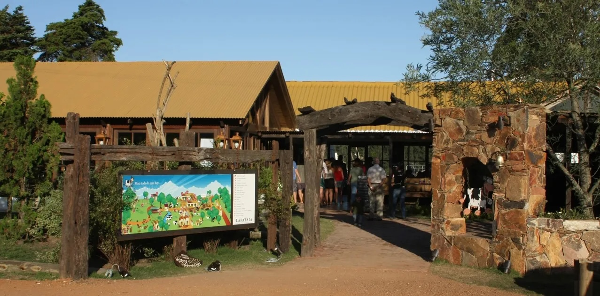
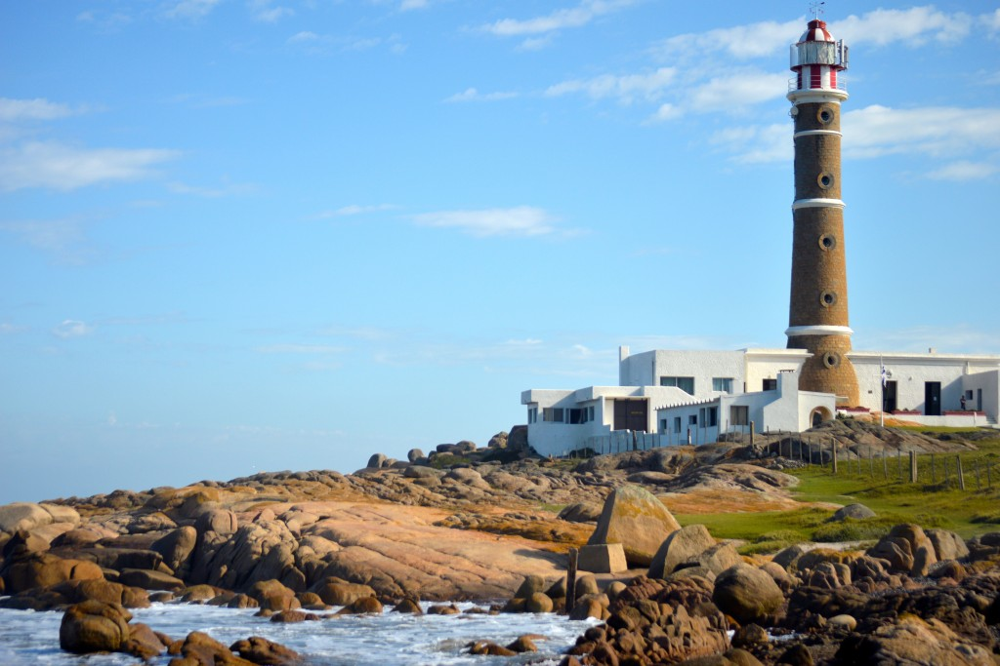

Top Attractions
Ciudad Vieja
Ciudad Vieja is the historic old town of Montevideo, Uruguay, known for its colonial architecture, cobblestone streets, and vibrant cultural life. Once the original walled city, it now houses museums, art galleries, cafes, and a bustling port market. Landmarks include the Solís Theatre, the Metropolitan Cathedral, and the iconic Puerta de la Ciudadela (Gateway of the Citadel). It's a popular area for tourists and locals alike, blending Montevideo’s colonial past with modern urban energy.
La Mano

La Mano de Punta del Este is a famous sculpture of five fingers emerging from the sand on Playa Brava in Uruguay. Created in 1982 by Chilean artist Mario Irarrázabal, it serves as a warning about the beach’s strong currents. Built in just six days, it has become a major symbol of Punta del Este and one of Uruguay’s most iconic landmarks. Make sure to stop by to take pictures!
Casapueblo
Casapueblo is a unique, whitewashed building in Punta Ballena, Uruguay, created by artist Carlos Páez Vilaró. Inspired by bird nests, it was built without formal plans over 36 years and serves as a museum, art gallery, hotel, and café. It’s famous for its organic design, sunset views, and the daily “Sun Ceremony,” where Vilaró’s voice recites a poem to the setting sun.
Tambo Lapataia
Tambo Lapataia is a family-friendly dairy farm and rural attraction located near Punta del Este, Uruguay. Established in 1986, it is renowned for producing one of Uruguay’s most beloved dulce de leche brands. The farm offers visitors a chance to experience country life through activities such as cow milking, feeding baby goats and calves, pony rides, and exploring a mini-zoo with farm animals. Guests can also enjoy homemade treats like waffles and pancakes topped with their signature dulce de leche. Set amidst 45 hectares of scenic countryside, Tambo Lapataia provides an authentic and engaging rural experience for all ages.
El Estadio Centenario

Estadio Centenario is a historic football stadium in Montevideo, Uruguay, built in 1930 to celebrate the country's centennial constitution and host the first FIFA World Cup, where Uruguay won the final. It seats around 60,000 people, is home to the national team, and was declared a "Historical Monument of World Football" by FIFA. The stadium also houses the Museo del Fútbol Uruguayo and will play a ceremonial role in the 2030 World Cup.
Cabo Polonio
Cabo Polonio is a remote coastal village in Uruguay known for its natural beauty, lack of roads, and off-the-grid lifestyle. Accessible only by foot or special vehicles, it has no public electricity or running water, making it a peaceful, eco-friendly escape. Located within a national park, it features sand dunes, forests, a historic lighthouse, and a large sea lion colony.